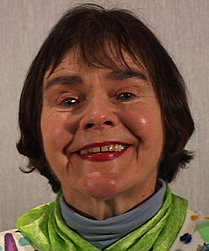
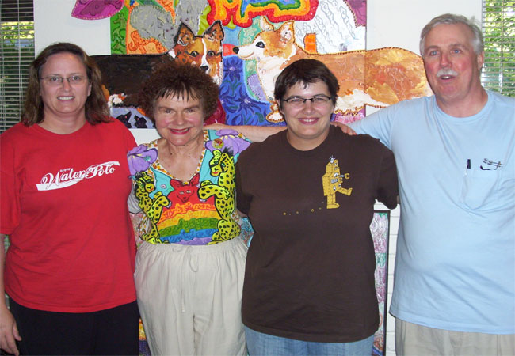

Home Gallery Saskatchewan Artist Database
"Someone accused me of being a hippie, I thought it was an insult. I was a bone fide artist."
- Maija Peeples-Bright
Maija Peeples-Bright (also known throughout her life as: Maija Gegeris, Maija Zack, Maija Woof and Maija Peeples) is a Saskatchewan artist born in Riga, Latvia on November 21st, 1942. At the young age of nine, she immigrated to the United States with her parents. At Davis at the University of California she began her studies in Fine Arts after losing interest in her Math studies and discovered what is referred to as the California Funk Movement.
Once Maija finished grad school, she went on to teach art at various colleges throughout California and taking part in the California Funk Movement. She eventually moved to Regina for some time then moved back to Sacramento where she continues to make vibrant, beautiful, colourful artwork inspired by the California Funk Movement.
Maija's artwork spans from paintings and ceramics to embroideries and artwork on everyday items (as seen in the gallery). Her animals that she creates are referred to as "beasties". Maija truely lives her artistic funk and style out in her day to day life and she isn't afraid to show it. Animals remain one of her favorite things to create.

Left to Right: Carol Benesh (change control for MSI), Maija Peeples-Bright, Julia Krueger (art historian), and Bill Bright (software engineer)
"My wife is an artist of some note and we live surrounded by her work and the work of her contemporaries and other artists that she admires. As a result I like to think that I have developed a bit of an eye for quality over time."
- Bill Bright
Website created by Cole Novak
Images copyright belong to the artist